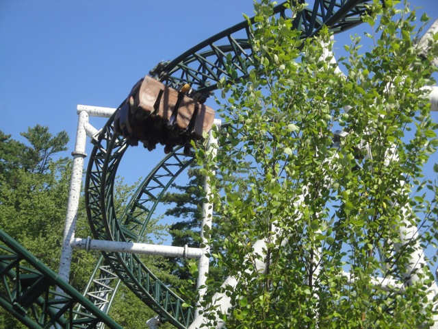
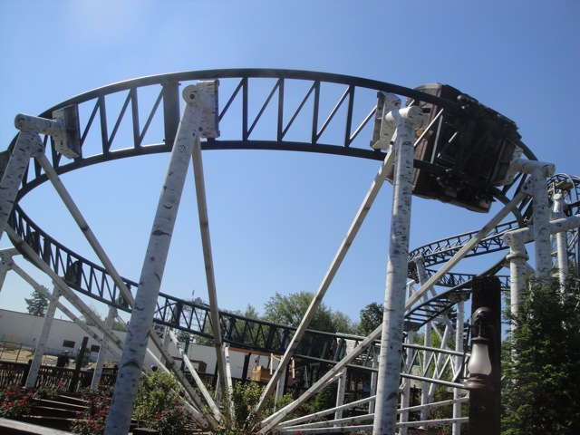
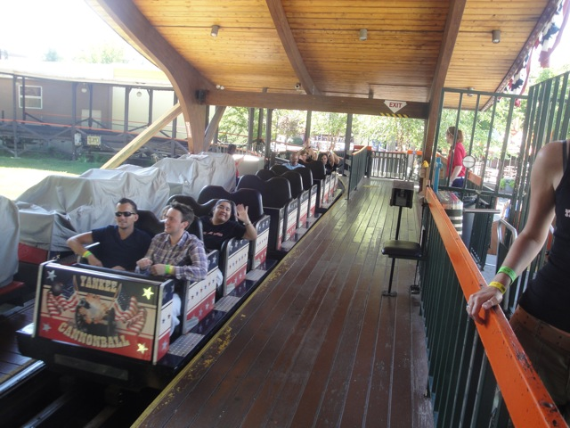
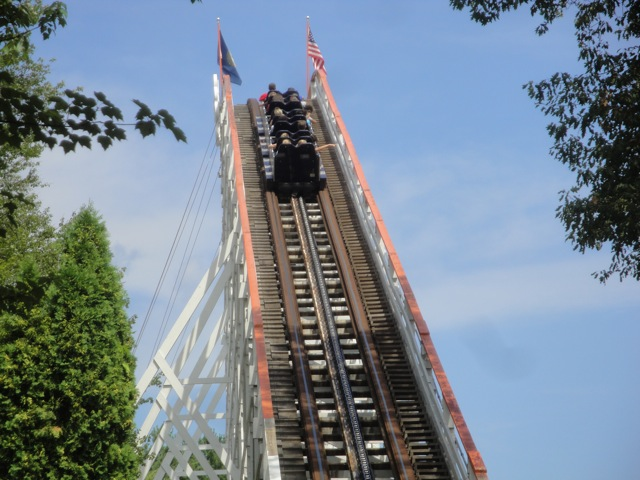
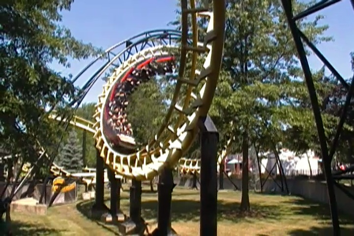
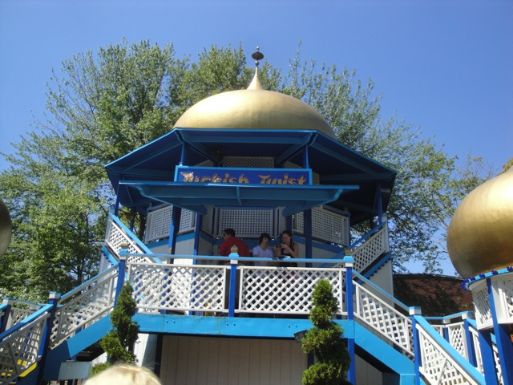
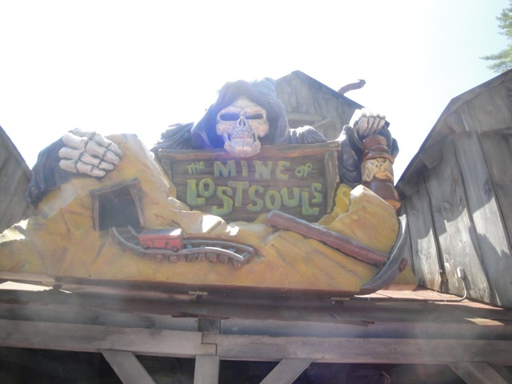
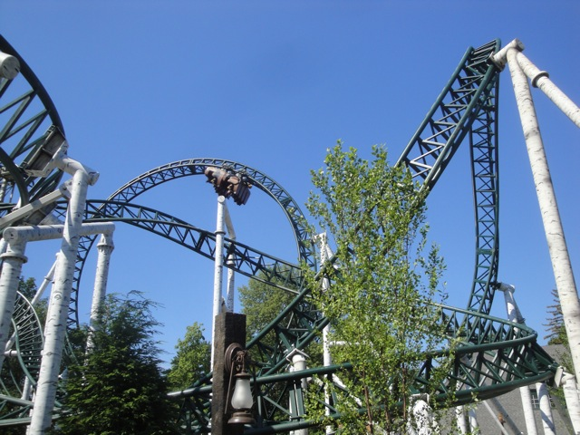
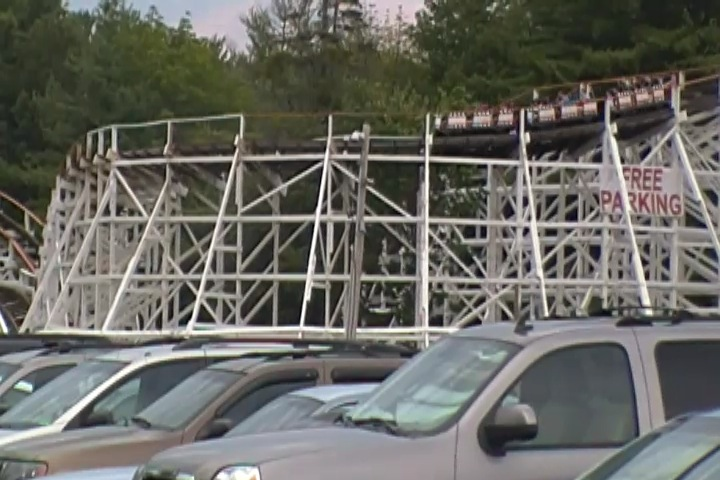
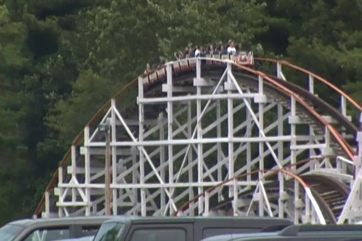

TPR's Northeast Trip
Bowcraft & NYC Coney Island Quassy Lake Compounce Six Flags New England
Palace Playland
Funtown Splashtown
Canobie Lake Park
La Ronde
Great Escape Six Flags Great Adventure
 All right. Next up was Canobie Lake Park in New Hampshire, and man did this small little park kick a lot of ass.
All right. Next up was Canobie Lake Park in New Hampshire, and man did this small little park kick a lot of ass.
 New for 2011 at Canobie Lake Park is a Gerstlauter Eurofighter called Untamed.
New for 2011 at Canobie Lake Park is a Gerstlauter Eurofighter called Untamed.
 See. It really is called Untamed. I wasn't lying. =)
See. It really is called Untamed. I wasn't lying. =)
 We ended up having an hour of morning ERT on Untamed, which was awesome!!! Oh, and the station is really nice as well.
We ended up having an hour of morning ERT on Untamed, which was awesome!!! Oh, and the station is really nice as well.
"May I please join you in your morning Untamed ERT? I promise I won't maul anyone. Please?" =(
 And as expected, Untamed was totally awesome.
And as expected, Untamed was totally awesome.

It was pretty much just like Spongebob, only without the airtime hill and the mid course brakes.

Although on a less pleasent note, some of our rides had a little bit of headbanging, which wasn't comfortable. But whatever. It's still a great ride.
 Oh, and in our hour of Untamed ERT, we also had Yankee Cannonball ERT. So it was an hour of ERT on the parks 2 best rides. =)
Oh, and in our hour of Untamed ERT, we also had Yankee Cannonball ERT. So it was an hour of ERT on the parks 2 best rides. =)

Notice the empty seats, you tend to get those when you have a really good ERT session.

Dude!! Yankee Cannonball was great!! It was perfectly smooth and had some really nice pops of airtime!!! =)
"Dammit!!! Who snapped the flyers!!!?"
 Hold on. There's still one last coaster left for us to ride.
Hold on. There's still one last coaster left for us to ride.

It may not have been anything special, but at least it didn't try to kill us.
"Umm, you guys do realize that this is a powered coaster. It doesn't count."
 "Yeah, we know. We're not trying to get any credits. We just enjoy being sad and pathetic." =)
"Yeah, we know. We're not trying to get any credits. We just enjoy being sad and pathetic." =)
In case you didn't know, Canobie Lake Park is located right on the shore of Canobie Lake. What? Did you seriously think that they just called it Canobie Lake Park just for sh*ts and giggles? Anyways, the setting of this park is beautiful.
Hmm, looks like Canobie Lake Park actually puts on a good Halloween Event.
"Do you get wet on this ride?"

Canobie Lake Park has a great flat ride collection containing many flat rides that other parks don't have anymore, like Rotors. *cough* Six Flags Magic Mountain *cough*
Yay!!! They have a bouncy bouncy ride here!!!
But unfortunetly, our ride never bounced. We just spun around and ocassionally bounced. LAME!!!!! =(
"Ever since Funtown Splashtown, I've become addicted to Skeeball!! I'm not joking!!! This is a serious problem!!! Get me into therapy so I can recover from this addiction!!!"
 "Popcorn Stand #1 is a really good value."
"Popcorn Stand #1 is a really good value."
We decided to check out their log flume, since we've been riding them like crazy on this trip.
 Not only did it have a great setting, but the log flume itself was pretty damn good.
Not only did it have a great setting, but the log flume itself was pretty damn good.

We also decided to check into the parks dark ride, the Mine of Lost Souls.
The story starts out with 2 kids getting lost in the Mine of Lost Souls and we need to find them.
This ride made my brain hurt. How did we end up in a mine in New Hampshire to an Ancient Mummy Tomb in Egypt? =/
"Quit your smiling Jason!!! Air Hockey is a very serious sport!!!"
"This burger from Burger Bar #3 is nothing special."
This may look like an ordinary teacup ride, but it's not. It goes in a figure 8 shape. It sounds confusing in words, so just go to Canobie Lake Park and check it out for yourselves.
What sort of ride is called Starblaster?
Oh, it's an S&S Double Shot. And those are always fun.
While the ride was fun and all, I just want to cliff jump from that. Seriously, this ride is of cliff jumping size. Just look at it and compare it to the 50 fter at Tar Creek and compare size. Seem the same to me.
 We decided to take a couple more rides on Untamed since it's a really good ride.
We decided to take a couple more rides on Untamed since it's a really good ride.

This is a great edition to Canobie Lake Park and totally fits in with the park. Smart move Canobie Lake Park. Smart move.
How many parks do you know have a mirror maze?
Oh crap. You can't crash in this maze. I'm screwed.
"Hey look!!! It's that evil kid!!!"
LAME!!!!!!! =(
Oh great. Another ride called Surfs Up. Let's hope that it TOO doesn't break on us.
Not only did it not break on us, but it ran a good program. Win Win situation for us.

We decided to end our day at Canobie Lake Park with a ride on Yankee Cannonball.

This is definetly one of the more underrated rides in the roller coaster community.
"What do you mean it's not normal to take all of the parks park maps?"
All right. Canobie Lake Park was awesome. Now it's time for us to take the long drive to Canada.
New Hampshire is f*cking beautiful.
We had to go to Walgreens to get an air freshener since SOMEONE stunk up the back of the bus.
Hmm. I didn't know that Burger King served smoothies.
Dude!!! This is the best Burger King ever!!! Not only do they have a Freestyle Coke Machine, but they had an ENTIRE different menu than in California. Sure, they still had Whoppers and the usual stuff, but they had all sorts of stuff that I never saw in CA Burger King.
I tried more Freestyle Coke Creations here than I did in all my SFMM visits put together.
"Oh crap!!! Border Crossing!!! Everyone act natural!!!"
Well, we made past Border Patrol and got to our hotel in Montreal. The only thing is that when we got to our hotel, we had no power. Yep. Our hotel had no electricty. So yeah. I couldn't charge my cameras and none of the lights in the hotel worked, which really made finding our rooms to be a challenge. This is pretty much what it looked like going through the halls of the hotel.
When we reached our room, we opened the door, and we couldn't see a thing. We had no idea what our room looked like so I snapped this picture and Antonio and I first saw what our room looked like solely through this picture on my camera.
In case you're wondering why we had no power, it turns out that a storm a couple days totally wrecked through Montreal and knocked down that power line that brought the hotel electricity.
 Yeah. This storm was pretty damn bad.
Yeah. This storm was pretty damn bad.
Normally, a lack of power would've totally screwed us over, but luckily tonight was the Alcohol Exchange, so we were too busy drinking and having fun outside to care about electricity.
And I was actually able to take part in this fun since Canada actually is smart and has an 18/19 drinking age depending on the province. I'm not going to get into my rant about how f*cking stupid the U.S 21 Drinking Age is because if I did, it'd have more text than the rest of the entire Northeast Trip Update. Let's just say that I turned my drinking age rant into a 6.5 page college essay and got an A.
"I have no idea what you're mixing into that drink, but I want it."
"Oh man. I'm gonna be pissing blood tomorrow. But it'll totally be worth it."
This dutch alcohol beverage was intersting. It had an herbal taste to it, almost like a tea, and it was 30 % alcohol.
"Hmm. This alcoholic drink seems very strange. It's bland, jagged, and making my mouth bleed. I better not drink this. It doesn't seem vegan."
Tomorrow morning is going to be very intersting for a lot of you guys.
La Ronde
Home